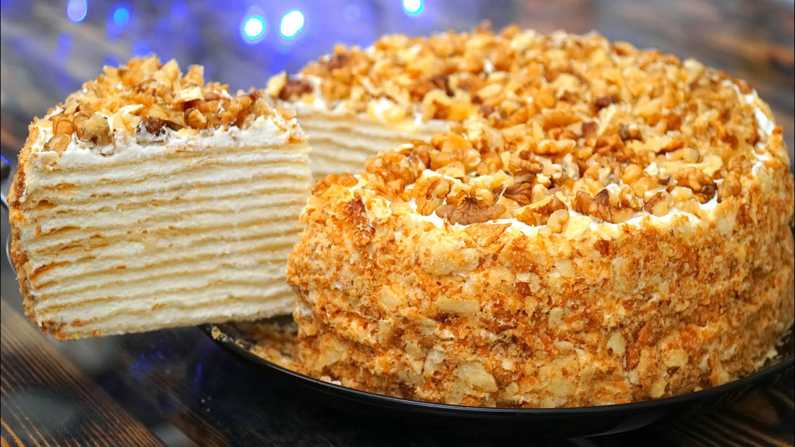
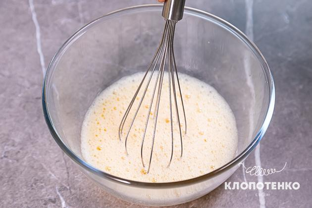
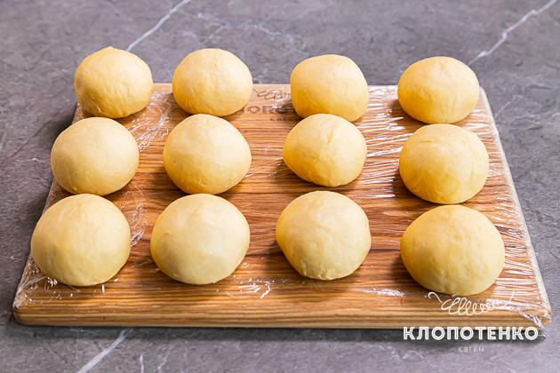
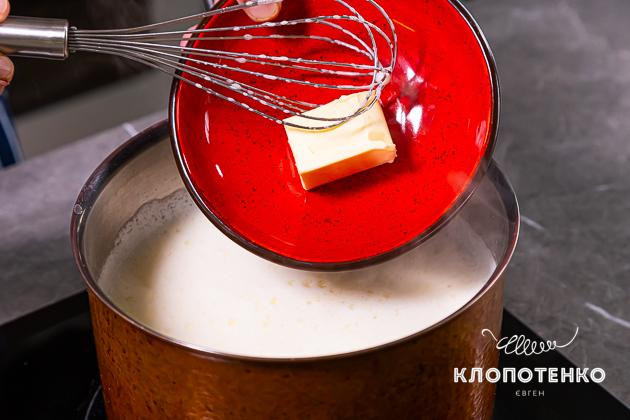
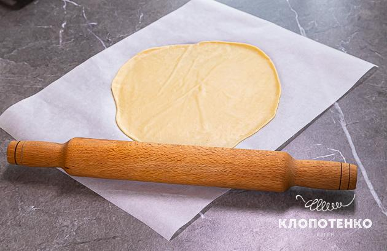
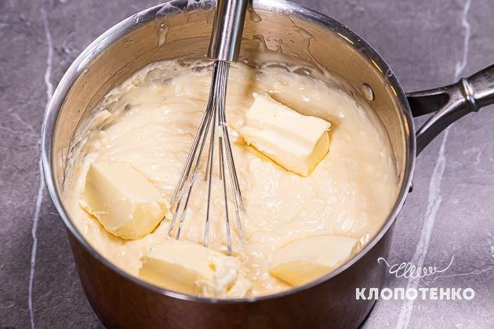
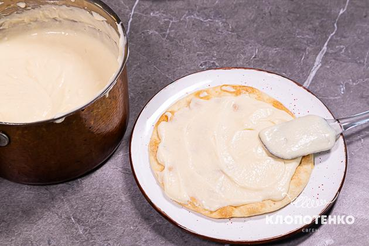
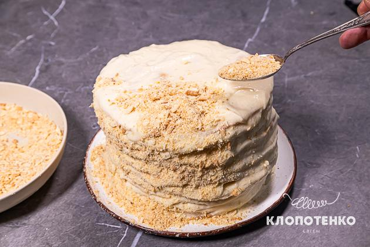
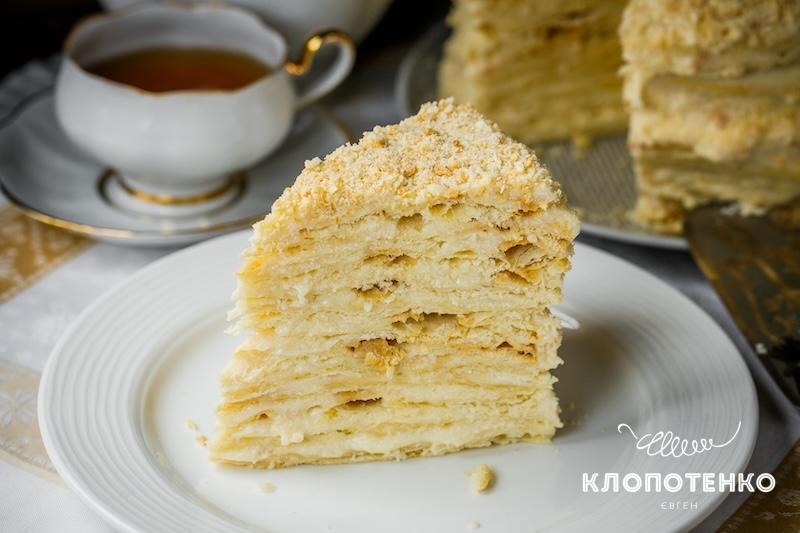

Анкета про себе
ТОРТ НАПОЛЕОН

- Розбийте 2 яйця в миску, додайте ⅓ ч.л. солі та збийте їх разом. Додайте до яєць 150 мл води, 3 ст.л. коньяку та 1 ст.л. оцту і ретельно розмішайте.

- У 700 г борошна натріть 360 г холодного масла на крупну тертку. Розітріть масло з борошном руками, щоб не було великих грудочок масла.

- Влийте яєчну суміш у борошняно-масляну та замісіть однорідне тісто. За необхідності додайте трішки борошна. Розділіть тісто на 12 рівних частин, скачайте їх у кульки та поставте в холодильник на 30 хвилин.

- Доки тісто настоюється приготуйте крем: у каструлю всипте 300 г цукру і 10 г ванільного, 100 г борошна та вбийте 4 яйця. Перемішайте до обʼєднання інгредієнтів, тонкою цівкою влийте молоко та поставте на максимальний вогонь.

- Коли крем почне парувати, зменште вогонь до середнього та варіть, постійно помішуючи, доки маса не загусне до стану рідкої сметани. Зніміть крем з плити, додайте 50 г масла, розмішайте та накрийте плівкою до охолодження.

- Увімкніть духовку розігріватися до 200 градусів. Візьміть перший корж і розкачайте його в коло діаметром приблизно 25-26 см на пергаменті, присипаному борошном. Виріжте рівне коло діаметром 24 см, обрізки лишіть там же. Перекладіть пергамент на деко та запікайте корж 7 хвилин. Повторіть те саме з рештою коржів.

- У крем додайте 250 г масла кімнатної температури та розмішайте віничком до обʼєднання.

- На тарілку для подачі викладіть трішечки крему й зверху викладіть перший корж. Змажте його кремом і накрийте наступним коржем, злегка притиснувши. Таким чином зберіть увесь торт.

- Обрізки коржів перебийте в блендері до стану крихти. Верхній корж і боки торта змастіть кремом і присипте крихтою.

- Поставте торт у холодильник на 3-4 години, а краще на всю ніч. Так він встигне просотатися та стати ніжним.
